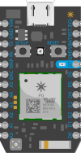

Features
-
Microcontroller specs
- STM32F205 120Mhz ARM Cortex M3
- 1MB Flash
- 128KB RAM
- 18 mixed-signal GPIO (digital, ADC, PWM)
- Advanced peripherals: DAC, I2S, I2C, CAN
-
Wi-Fi specs
- Cypress BCM43362 Wi-Fi chip
- Single band 2.4GHz IEEE 802.11b/g/n
- Supports wireless data rates of up to 65Mbit/s
- Ultra low power sleep, stand-by and stop modes
- Supports Open, WEP, WAPI, WPA and WPA2-PSK WiFi security modes
- Soft AP setup
-
Other specs
- On-board RGB status LED
- Breadboard friendly 24-pin package
- Single-sided PCB with castallated edges for surface mount
- Real-time operating system (FreeRTOS)
- FCC/CE/IC/Telec certified
- Open source hardware
-
Simple to setup and use
- Set up with mobile app within minutes
- Connects to the Particle cloud out of the box
- Program over the air through the Particle Web IDE
- Work on projects locally with the Particle Desktop IDE
- Script common tasks with the Particle Command Line Interface
- Send data to 3rd party services through webhooks and integrations
- Monitor state of device through the Particle Console
-
Community resources
- Explore fully developed projects to get through IoT learning curve
- Use community-provided code libraries for common peripherals
- Join the Particle community for inspiration and help by experts